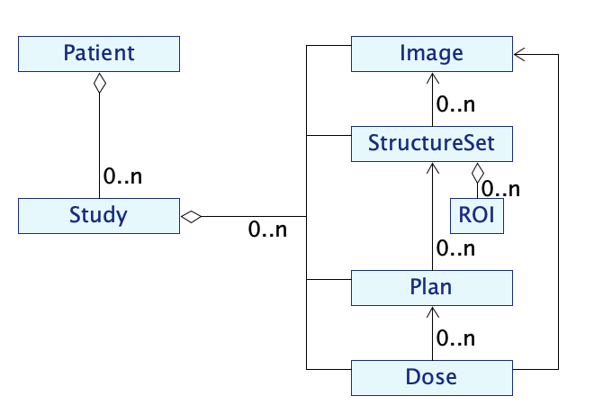

Usage and data model
Usage
Scikit-rt can be used in scripts, to be run from the command line or to be executed on a batch system; and can be used in Jupyter notebooks, where interactive features are enabled for image viewing. The Scikit-rt installation includes both Jupyter Notebook and JupyterLab.
Scikit-rt is able to load DICOM data (images, RTDOSE, RTSTRUCT, RTPLAN) and NIfTI data (images, dose images, regions of interest (ROIs) represented as masks), and to convert between them.
Data model
The different types of radiotherapy data are represented in scikit-rt by different classes:
There are associations between class instances:
a StructureSet is composed of ROIs, and relates to a specific Image;
a Plan has constraints relating to a StructureSet;
a Dose is calculated on the basis of a Plan and the material densities represented by an Image.
Data relating to an indidual patient are typically grouped into one or more studies. This is represented by the classes:
A class diagram for the data model is shown below.
Data loading
The constructors of the classes Image, Dose, ROI, StructureSet,
Plan each take a boolean parameter load.
If
loadis set toTrue(the default), values of object attributes are loaded when the object is created.If
loadis set toFalse, values of object attributes are loaded by the first call to an object method that accesses an attribute, or may be loaded explicitly using the object’sload()method.
The Patient and Study create data objects with load set to
False. Attributes of these objects should usually be accessed using
their getter methods, rather than directly, as these will ensure
that attribute values have been loaded. This strategy of loading
data as needed avoids the memory and time costs of loading data
that might not be used.